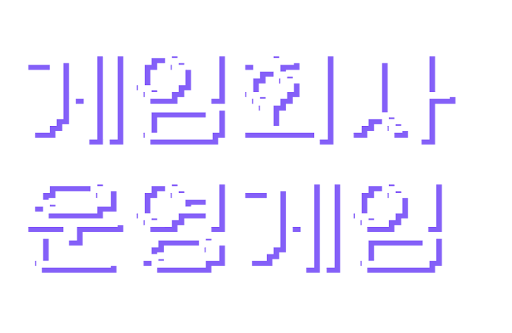
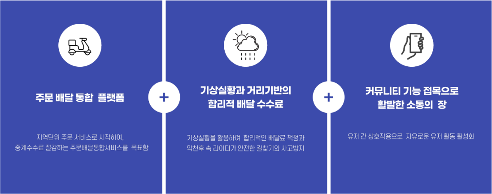
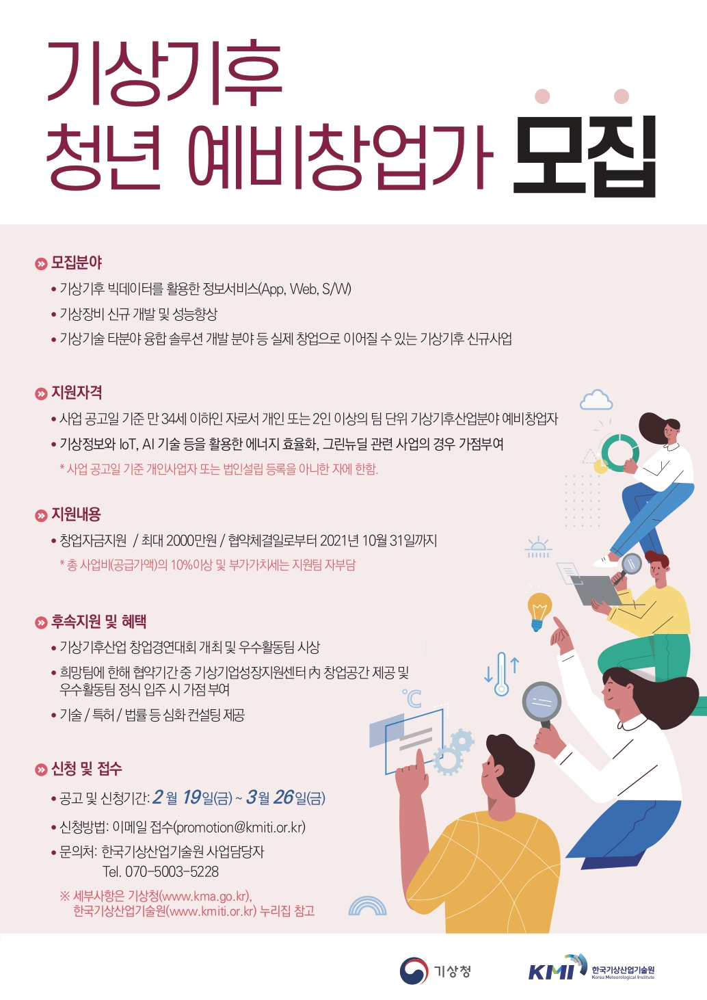

창업 캠프 – 기상천외라이더

프로젝트 개요
창업 캠프 프로젝트는 기상·기후 데이터를 활용한 새로운 오프라인 연계 배달 플랫폼을 주제로 한 창업 실험이었습니다. 단순히 아이디어 제안에 그치지 않고, 사업계획서 작성 → 서류/발표 평가 통과 → 사업자 등록 → 캠프·멘토링·경연대회 참가까지 실제 창업 프로세스를 전주기로 경험했다는 점이 핵심입니다.
저는 팀장으로서 아이템 구조 설계, 수익 모델 정의, 시장·경쟁 분석, 실행 로드맵 및 리스크 플랜 수립을 담당했습니다. 게임 프로젝트에서 쌓은 시스템 사고를 기반으로, 서비스 구조와 운영 플로우를 모델링하고 사업 언어로 재해석하는 데 집중했습니다.

주요 역할 및 성과
역할
- 아이템 기획: 오프라인 매장·배달 기사·고객을 연결하는 서비스 구조 정의, 사용자 여정(User Journey) 설계
- 사업계획 수립: 시장 조사, 타깃 세분화, 경쟁 서비스 분석, 수익 구조 및 비용 구조 설계
- 피치덱/발표: 예선·본선 발표 자료 구성, 스토리라인 설계, Q&A 대응 전략 준비
- 팀 운영: 역할 분담, 일정 관리, 외부 멘토링/컨설팅 일정 조율
성과
- 기상기후산업 청년창업 지원사업 최종 선정 및 예산 확보
- 창업 캠프, 중간·최종 경연에서 발표·피드백을 통해 사업 모델 고도화
- 법인/사업자 등록, 인프라 공간 확보 등 실제 창업 인프라 경험
- 서비스 확장성, 지역성, 운영 리스크에 대한 구체적인 피드백을 바탕으로 다음 단계 전략 수립
지원 프로그램 구성
창업 캠프는 단일 행사라기보다, 연간 단위의 단계별 육성 프로그램에 가까웠습니다.
- 창업 캠프: 특강, 실전 워크숍, 1:1 코칭을 통해 아이템 구체화 및 사업계획 보완
- 멘토링/컨설팅: 기술·특허·법률·마케팅 등 분야별 전문가와의 정기 세션
- 창업 경연대회: 단계별 발표(예선·중간·최종)를 통해 피드백을 받고, 경쟁팀의 전략을 비교·학습
- 인프라 지원: 코워킹 스페이스, 회의실, 테스트 공간 등 물리적 인프라 제공
- 네트워킹: 동료 창업팀, 투자자, 기관 담당자와의 네트워킹 및 협업 기회

회고
프로젝트를 진행하며 가장 크게 배운 점은, “좋은 서비스 구조”와 “실행 가능한 사업” 사이에는 큰 간극이 있다는 것이었습니다. 전국 단위 확장 전략만을 바라보기보다, 지역 단위에서 시작해 점진적으로 확장하는 접근이 필요하다는 피드백을 여러 번 받았습니다.
이를 바탕으로, 오프라인 제휴·운영 인력·물류 파트너십 등 현실적인 운영 리소스를 고려한 개선안을 수립했고, 결제 모듈·전용 앱 개발은 후속 연도의 목표로 분리하는 등 단계적 로드맵을 다시 설계했습니다.
게임 개발에서 사용하던 시스템 설계 방식(플로우 차트, 상태 전이, 리스크 분해 등)을 사업 계획과 운영 전략에도 그대로 적용해 볼 수 있었던 경험이었고, 이후 다른 프로젝트에서 커뮤니케이션 및 문서화 방식에 큰 영향을 주었습니다.
관련 문서
아래 문서는 실제 심사에 제출했던 버전으로, 아이템 구조·시장 분석·재무 계획·운영 전략 등이 정리되어 있습니다.